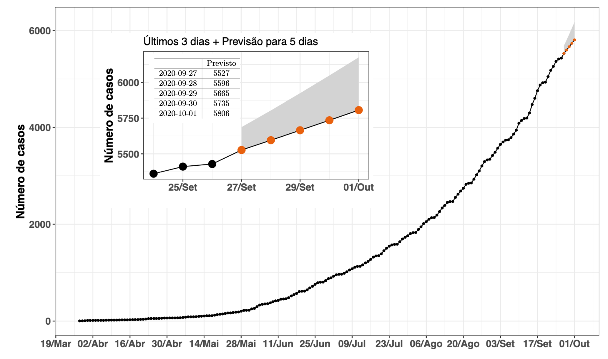
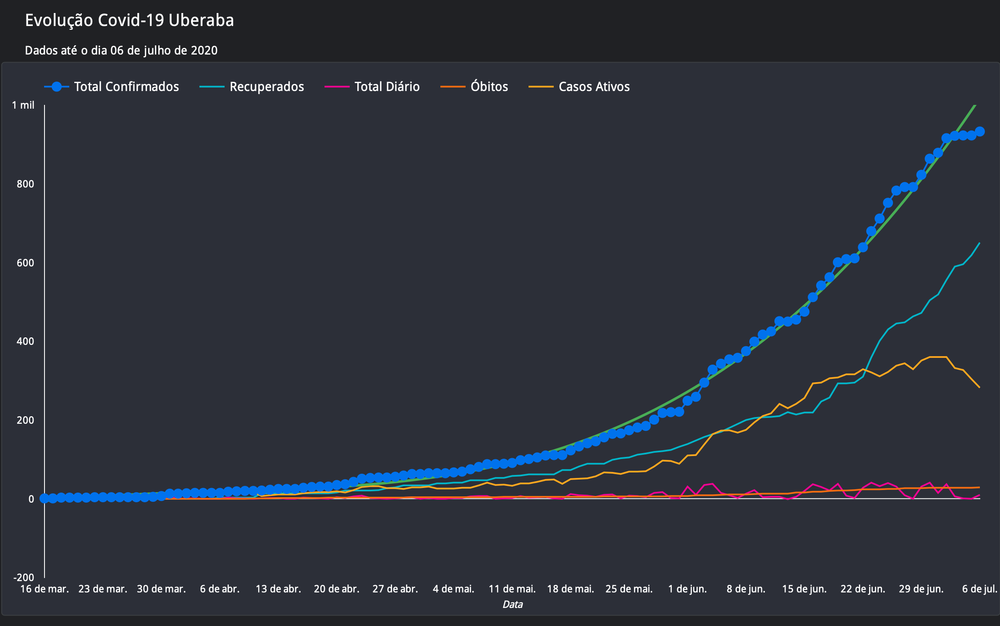
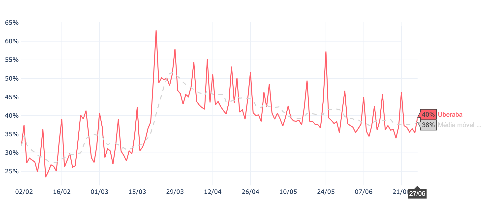

Previsão de Curto Prazo da Covid-19 em Uberaba
- No dia de hoje (16/06/2020), acumulamos 450 casos notificados.
- Projeção para dia 21 de Junho é de até 622 casos notificados.
- Pontos pretos: número de casos confirmados a cada dia.
- Pontos laranjas: a previsão para os próximos 5 dias.

Figura 1: Estimativas de crescimento exponencial para os próximos 5 dias para o Município de Uberaba. Projeções dentro de um intervalo de 95% de confiança.
A grande maioria das epidemias apresenta um crescimento exponencial em seu início. Essa característica reflete o fato de que, inicialmente, nenhum indivíduo está imune à doença e aqueles que contraem o vírus geralmente o transmitem para mais de uma pessoa. A Figura 1 mostra o número acumulado de pessoas infectadas em função do tempo em Uberaba. Nesse gráfico, os pontos laranjas apresentam a previsão para os próximos 5 dias dada pelo modelo exponencial ajustado aos dados.
Evolução da Covid-19 em Uberaba
Todos os dados foram obtidos da própria Secretária Municipal de Saúde de Uberaba até o dia 16 de junho de 2020.

Figura 2: Evolução dos casos de Covid-19 em Uberaba. Clique na imagem para ver o gráfico interativo

Figura 3: Indicadores dos casos de Covid-19 em Uberaba. Clique na imagem para ver o gráfico interativo
Quantas pessoas um infectado contamina na cidade de Uberaba?
Uma pessoa infectada está contaminando 1.27 pessoas.
O número Reprodutivo efetivo (Re) é a média de pessoas contaminadas por um infectado. Valores maiores que 1 indicam que o número de novos casos está aumentando. Valores próximos de um indicam um número constante de casos a cada dia. Apenas valores de Re abaixo de um por muitos dias indicam tendência de redução no número de casos.
Taxa de Isolamento de Uberaba
A Taxa de isolamento média de Uberaba é 46%. O Índice de Isolamento Social foi desenvolvido pela Inloco para auxiliar no combate à pandemia da COVID-19 ao acompanhar o coronavírus no Brasil.

Figura 4: Taxa de Isolamento de Uberaba. (Fonte: farolcovid.coronacidades.org)